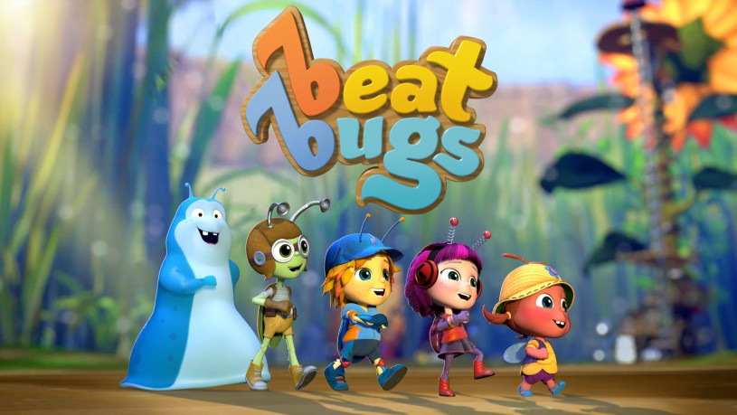

IMDB-Wertung: 7.8 / 10
IMDB-Wertung: 7.8 / 10  Metascore:
Metascore: 
Beat Bugs is an animated series, revolving around the lives and adventures of five charming and funny child-like bugs who live in an overgrown American-style backyard.
 IMDB-Wertung: 7.8 / 10 Metascore:
Beat Bugs is an animated series, revolving around the lives and adventures of five charming and funny child-like bugs who live in an overgrown American-style backyard.
Jahr: 2016
Dauer: 24 Minuten
FSK:
Land: Australien Studio: NetflixTonspuren: DD5.1 - ,
Untertitel: Deutsch, Englisch,
Auflösung: 720p (1280x720) Größe: 569 MB
Genre: Abenteuer, Fantasy, Animation/Trick, Familie, TV-Serie, Musical
Regisseur: Josh Wakely, Pablo de La Torre
Drehbuch: Josh Wakely
Soundtrack:
Darsteller:
 Ashleigh Ball als Jay 27 episodes, 2016-2017
Ashleigh Ball als Jay 27 episodes, 2016-2017 Erin Mathews als Kumi 27 episodes, 2016-2017
Erin Mathews als Kumi 27 episodes, 2016-2017 Peter Kelamis als Cockroach / ... 8 episodes, 2016
Peter Kelamis als Cockroach / ... 8 episodes, 2016 Gwynyth Walsh als Doris / ... 6 episodes, 2016
Gwynyth Walsh als Doris / ... 6 episodes, 2016 Kyle Rideout als Ants 5 episodes, 2016
Kyle Rideout als Ants 5 episodes, 2016 Brian Drummond als Postman Bee 4 episodes, 2016
Brian Drummond als Postman Bee 4 episodes, 2016 Jay Brazeau als Octopus 2 episodes, 2016
Jay Brazeau als Octopus 2 episodes, 2016 Bethany Brown als Blackbird 2 episodes, 2016
Bethany Brown als Blackbird 2 episodes, 2016 Britt McKillip als Katter 2 episodes, 2016
Britt McKillip als Katter 2 episodes, 2016 JR Bourne als The Man 1 episode, 2016
JR Bourne als The Man 1 episode, 2016 Michael Dobson als Mr. Kite 1 episode, 2016
Michael Dobson als Mr. Kite 1 episode, 2016 Rebecca Shoichet als Connie 1 episode, 2016
Rebecca Shoichet als Connie 1 episode, 2016 Nicole Oliver als Granny Bee 1 episode
Nicole Oliver als Granny Bee 1 episodeDatei: X:\Kinder Serien\Beat Bugs\S01\Beat Bugs S01E01.mkv seit 28.02.2018
Festplatte: Kinder-Filme+Trick
 Es gibt insgesamt 56 Filme in der Gruppe 'Kinder Serien'
Es gibt insgesamt 56 Filme in der Gruppe 'Kinder Serien'